Your browser doesn't support the features required by impress.js, so you are presented with a simplified version of this presentation.
For the best experience please use the latest Chrome, Safari or Firefox browser.
Requisitos de software
¿Qué es un requisito?
- Condición o capacidad que un usuario necesita para poder resolver un problema o lograr un objetivo (IEEE).
- Condición o capacidad que debe exhibir o poseer un sistema para satisfacer un contrato, estándar, especificación, u otra documentación formalmente impuesta (IEEE).
- Una condición o capacidad que debe ser conformada por el sistema (RUP).
- Algo que el sistema debe hacer o una cualidad que el sistema debe poseer (Robertson - Robertson).
Tipos requisitos
- Requisitos funcionales. Indica algo que el sistema debe hacer.
- Requisitos no funcionales. Indica una característica del sistema, de la funciones del mismo: compatibilidad, rendimiento, seguridad, etc.
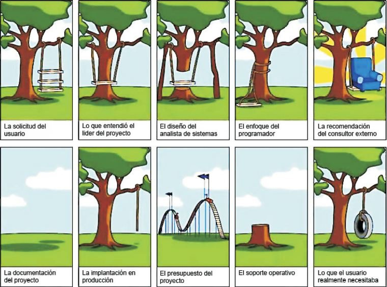
Especificación de requisitos
- Historias de usuario. Definen lo que los usuarios quieren
- Casos de uso. Definen la interacción entre los usuarios y el sistema.
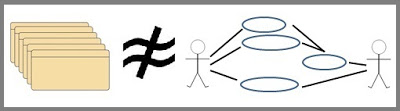
Historias de usuario
Una historia de usuario es una representación de un requisito escrito en una o dos frases utilizando el lenguaje común del usuario.
Las historias de usuario son utilizadas en las metodologías de desarrollo ágiles.
Las historias de usuario tienen el tamaño necesario para aportar valor al usuario y poder implementarse en un spring
Historias de usuario
Cómo "usuario" quiero "funcionalidad" para "beneficio"
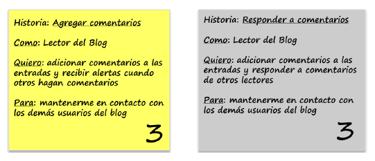
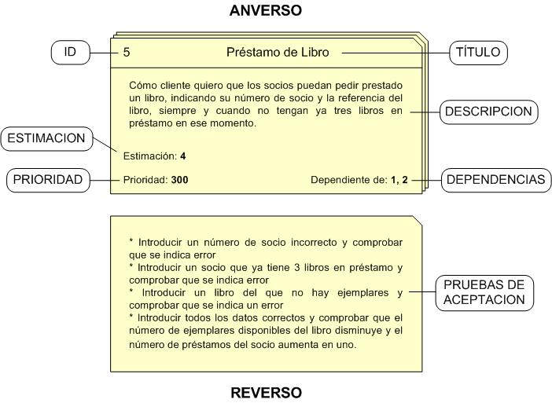
Una historia debería tener como máximo 4 criterios de aceptación
Una épica es una historia demasiado grande para ser desarrollada en un sprint o demasiado compleja.
Una épica se descompone en historias más pequeñas
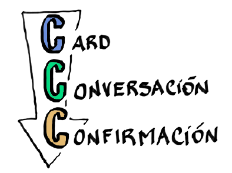
Componentes de historias de usuario
Una Historia de Usuario se compone de 3 elementos, también conocidos como “las tres Cs”de las Historias de Usuario:
- Card (Ficha) – Toda historia de usuario debe poder describirse en una ficha de papel pequeña. Si una Historia de Usuario no puede describirse en ese tamaño, es una señal de que estamos traspasando las fronteras y comunicando demasiada información que debería compartirse cara a cara.
- Conversación – Toda historia de usuario debe tener una conversación con el Product Owner. Una comunicación cara a cara que intercambia no solo información sino también pensamientos, opiniones y sentimientos.
- Confirmación – Toda historia de usuario debe estar lo suficientemente explicada para que el equipo de desarrollo sepa qué es lo que debe construir y qué es lo que el Product Owner espera. Esto se conoce también como Criterios de Aceptación.
Características de una correcta historia de usuario
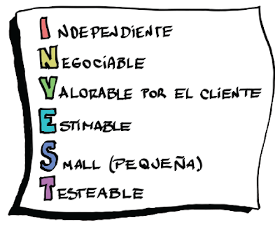
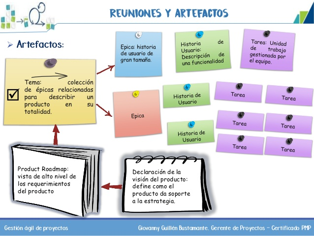
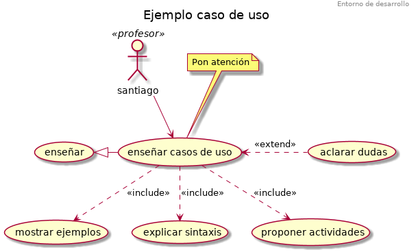
Casos de uso
Los casos de uso especifican un comportamiento deseado del sistema, representan requisitos funcionales del mismo.
Describen qué hace el sistema, no cómo lo hace.
UML nos dice que: “Un caso de uso especifica un conjunto de secuencias de acciones, incluyendo variantes, que el sistema puede ejecutar y que produce un resultado observable de valor para un particular actor”.
Los casos de uso nos sirven de base para elaborar los aspectos funcionales del pliego de condiciones y nos dan soporte en las etapas de modelado, desarrollo y validación de software.
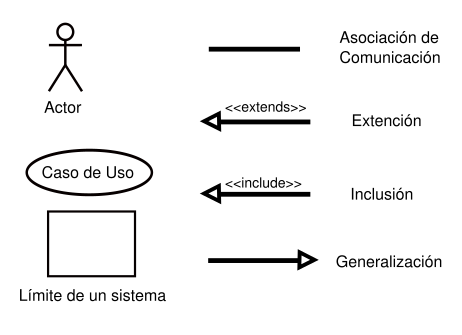
Elementos de un caso de uso
- Conjunto de secuencias de acciones, cada secuencia representa un posible comportamiento del sistema.
- Actores, se tratan de los roles que pueden jugar los agentes que interactúan con el sistema. Los roles son jugados por personas, dispositivos, u otros sistemas. Podríamos distinguir entre actores primarios, para los cuales el objetivo del caso de uso es esencial y actores secundarios, que interactúan con el caso de uso, pero cuyo objetivo no es esencial.
- Variantes, son versiones especializadas, un caso de uso que extiende a otro o un caso de uso que incluye a
otro.
consultar
En los diagramas de casos de uso se muestran: casos de uso (representados en forma de elipses), actores (en forma de personajes) y relaciones (en forma de líneas y/o flechas)
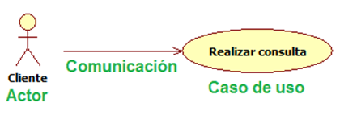
Inclusión
Un caso de uso base incorpora explícitamente el comportamiento de otro en algún lugar de su secuencia.
La relación de inclusión sirve para enriquecer un caso de uso con otro y compartir una funcionalidad común entre varios casos de uso, también puede utilizarse para estructurar un caso de uso describiendo sus subfunciones.
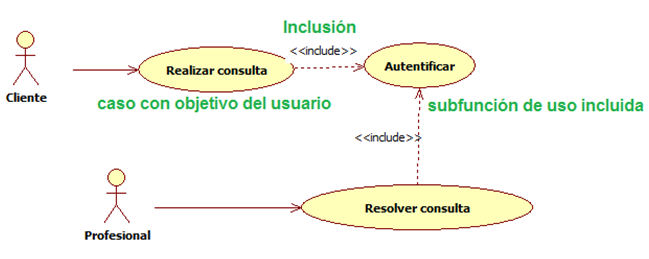
Extensión
El caso de uso secundario se ejecuta en una secuencia opcional del caso de uso principal
Si no existiera el caso de uso que extiende el caso de uso principal se podría ejecutar en su secuencia base
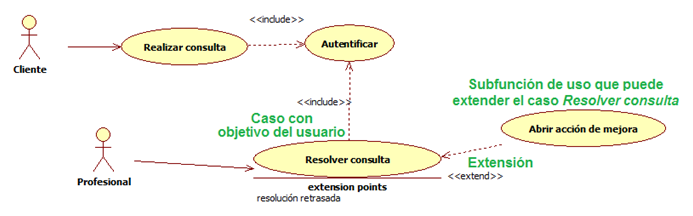
Especialización y generalización de casos de uso y actores
La punta de flecha señala el actor o caso de uso más general
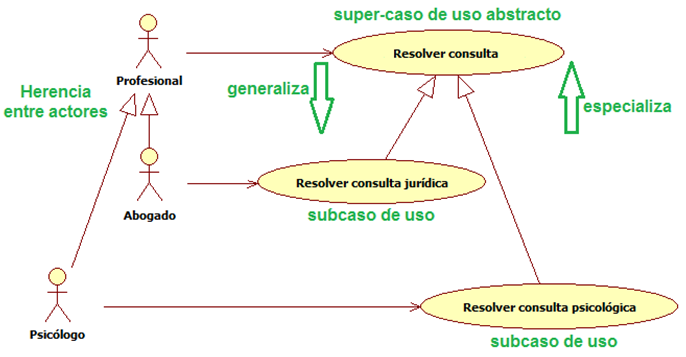
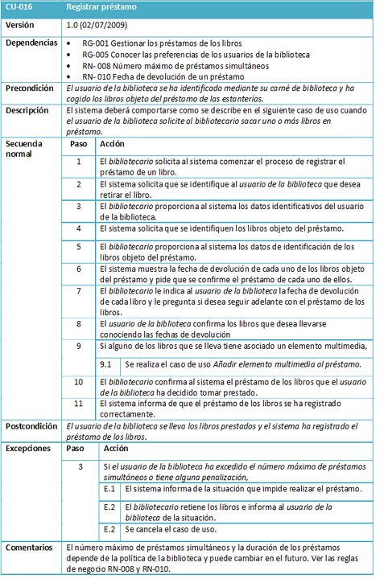
Puntos de historia
Los puntos de historia miden la complejidad de las historias, estableciendo una escala
La complejidad de las historias, los puntos de historia, no se pueden comparar a horas de esfuerzo ya que el sentido que tienen es catalogar la dificultad de la tarea.
El número de horas que nos lleve realizarlas dependerá de la capacitación y/o capacidad de la persona que la lleve a cabo, la carga de trabajo del equipo, etc. y por ello variará dicho valor dependiendo de la situación.
Los puntos de historia se calculan en base a:
- Complejidad: Una historia que es más compleja que otra tendrá más puntos historia.
- Esfuerzo: Quizás una historia no tiene complejidad pero si requiere esfuerzo (ejemplo, cambiar literales en todas las pantallas de la aplicación), también tendrá más puntos historia que otra más corta.
- Incertidumbre o riesgo: Es la probabilidad de que algo no esperado aparezca en la historia, siempre por falta de información previa.
- Aquí no se cuenta lo que suele ir mal. Por ejemplo, si cada vez que tocamos el módulo de autenticación rompemos algo, eso no debe reflejarse en la estimación (porque no queremos tapar los puntos de mejora).
Estimación de póquer - puntos de historia
Los puntos de historia miden la complejidad de las historias.
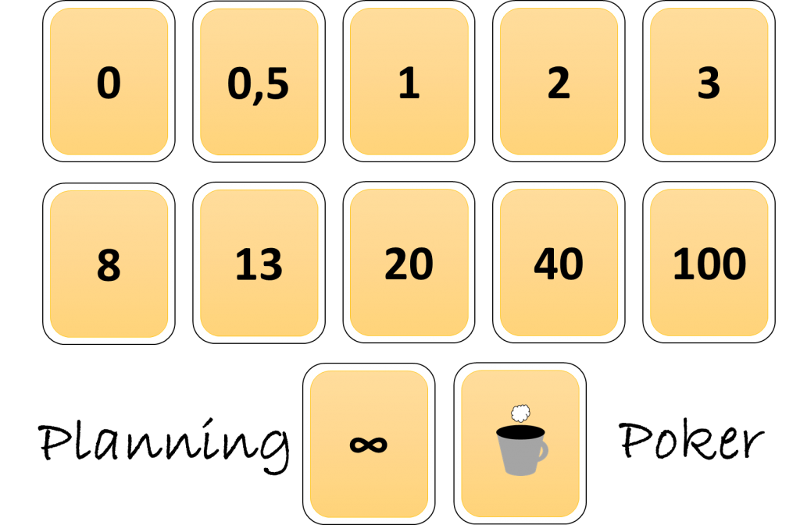
Estimación de póquer - puntos de historia
- Cada participante de la reunión tiene un juego de cartas.
- Para cada tarea (historia de usuario o funcionalidad, según sea el nivel de requisitos que se va a estimar) el cliente, moderador o propietario del producto expone la descripción empleando un tiempo máximo.
- Hay establecido otro tiempo para que el cliente o propietario del producto atienda a las posibles preguntas del equipo.
- Cada participarte selecciona la carta, o cartas que representan su estimación, y las separa del resto, boca abajo.
Cuando todos han hecho su selección, se muestran boca arriba.
- Si la estimación resulta “infinito”, por sobrepasar el límite máximo establecido, la tarea debe dividirse en sub-tareas de menor tamaño.
Si las estimaciones resultan muy dispares, quien asume la responsabilidad de gestionar la reunión, con su criterio de gestión, y basándose en las características del proyecto, equipo, reunión, nº de elementos pendientes de evaluar, puede optar por:
- Preguntar a las personas de las estimaciones extremas: ¿Por qué crees que es necesario tanto tiempo?, y ¿por qué crees que es necesario tan poco tiempo? Tras escuchar las razones, repetir la estimación.
- Dejar a un lado la estimación de esa tarea y retomar al final o en otro momento aquellas que hayan quedado pendientes.
- Pedir al cliente o propietario del producto que descomponga la funcionalidad y valorar cada una de las funcionalidades resultantes.
- Tomar la estimación menor, mayor, o la media.